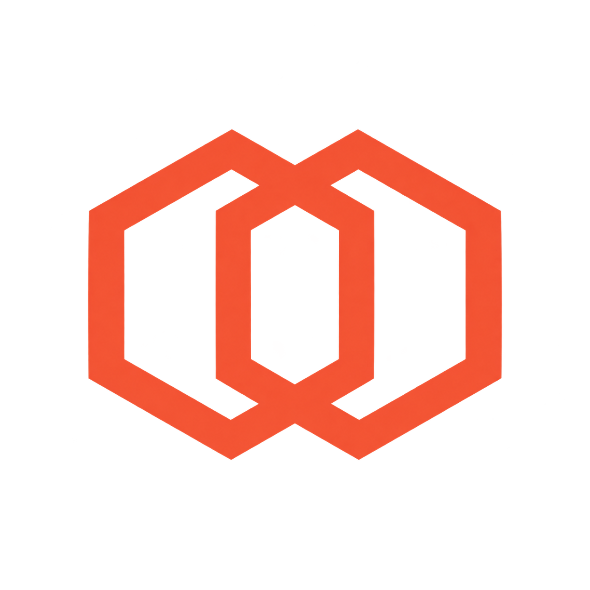

Quest3D사용 안내
- 01PC 앱 실행Quest3D Desktop
- 02PC 시작송출 준비 완료 확인
- 03Quest 연결헤드셋에서 PC 선택
첫 연결
두 기기를 같은 사설 네트워크에 연결합니다. PC 시작 후 Quest의 Scan으로 PC를 선택하고 Pair를 진행합니다. 검색되지 않으면 Select Server → +에 PC 앱 하단의 주소를 입력합니다.
Quest에 표시된 네 자리 PIN을 PC 앱의 Connection → 새 Quest 연결에 입력하고 연결 승인을 누릅니다. 승인이 끝나면 Quest에서 PC에 연결합니다.
화면 조절
AI Quality · 분석 품질
PC Settings → Quality → AI Quality에서 Standard 또는 Quality · Preview를 선택합니다. PC 중지 → 선택 → PC 시작 → Quest Connect 순서로 적용합니다.
Standard는 기존 빠른 설정, Quality는 PC 영상의 깊이를 더 촘촘하게 분석하는 설정입니다. 처리속도는 낮아지고, 장면에 따라 윤곽·입체감이 달라집니다. 같은 장면·같은 Depth로 비교하세요. 송출 해상도와 Quest 설정창 크기는 바뀌지 않습니다. 새 모델 다운로드나 APK 재설치는 필요 없습니다.
Depth model · 모델 비교
PC Settings → Quality → Depth model에서 DAv2 Small (기본) / DAD Small (비교)를 선택합니다. 설치된 모델은 송출 중에도 재연결 없이 전환됩니다.
같은 장면·Depth로 비교하세요. DAD는 일부 윤곽을 편안하게 만들지만 장면에 따라 입체감도 줄어들 수 있습니다. 같은 메뉴에서 기본 모델로 돌아갈 수 있습니다. 중지 상태의 선택은 다음 PC 시작에 적용되며, 미설치 항목은 선택할 수 없습니다.
| Mode | 2D 원본 · 3D 입체 전환 |
| Depth | −/+로 0.05%p 조절 PC: 숫자 입력 또는 슬라이더 · Quest: 3D 탭 |
| 윤곽 안정화 | PC Display에서 경계의 과한 양안 차이 완화 |
| 모니터 | PC 중지 후 변경 · 현재 16:9 송출 |
| Quest 화면 | Display: 크기·위치·보기·곡률·여백 3D: 입체감 · Quality: 전송·선명도·색감 |
| 메뉴 이동 | Quest 메뉴 하단 손잡이를 트리거로 잡고 이동 |
Quest view
PC 앱의 Display → Quest view → 화면 설정에서 조절 위치를 확인합니다. 화면의 실제 배치 조작은 Quest 설정창에서 진행합니다. PC는 원본·입체 변환·송출 품질을, Quest는 가상 화면 배치·감상 환경을 설정합니다.
Quest 설정창은 세로 여유를 둔 패널입니다. Display의 Size·Center·Lock 아래에서 Position / Views / Environment / Framing을 선택합니다. 상세 화면 왼쪽 위의 화살표로 돌아갑니다.
Size · 화면 크기
Quest Display → Size의 슬라이더 또는 −/+로 조절합니다. −/+는 5% 단계이며 길게 누르면 연속 조절합니다. 현재 가상 너비와 거리가 같은 행에 표시됩니다. 영상 해상도나 Depth 값은 바뀌지 않습니다.
Position · 거리·수평·회전
Alignment → Level이 기본입니다. Center·이동·손잡이 조절에서 머리 기울기에 따라 화면이 기울지 않고 수평을 유지합니다. Center는 크기·거리를 유지한 눈높이 정면 배치입니다. 회전이 필요하면 Free를 선택하고 Tilt(앞뒤)·Roll(좌우)을 2°씩 조절합니다. Free의 Center는 현재 시선 각도를 따릅니다. 수평 복원으로 Level에 돌아옵니다.
Distance는 가상 거리입니다. 기본값은 화면 너비 유지이며, 보이는 크기 고정을 켜면 거리와 너비가 함께 변합니다. 렌즈의 물리적 초점거리를 바꾸지는 않습니다. 화살표는 10cm 이동입니다. Lock은 정렬·회전을 포함한 영상 배치를 잠그며 설정창 조작은 유지합니다.
Views · 보기 저장
Standard: 너비 2.4m·거리 2.5m·평면·Level
Cinema: 너비 4m·거리 3m·Gentle·Level
Reclined: 현재 시선 각도에 한 번 배치·Free
Save view / My view: 현재 PC별 배치·정렬 방식 저장·불러오기
Level 보기는 현재 머리 위치와 수평 방향을 기준으로 복원합니다. Free 보기는 시선 기울기도 반영합니다. 크기·배치·곡률·잠금을 저장하며 모델·Depth·색감·송출 설정은 유지합니다. 잠긴 보기를 조절하려면 Display에서 Lock을 해제합니다.
Environment · 곡률·배경
Flat / Gentle / Curved에서 화면 형태를 직접 선택합니다. Bezel·Passthrough·Background·Ambient·조명 색도 이 화면에서 조절합니다.
Framing · 여백 자르기
PC 영상 연결 후 Top / Bottom으로 위·아래 검은 여백을 각각 0–25% 조절합니다. 좌우 눈에 동일한 비율을 적용하고 화면비를 보존합니다. Fit · 원본 복원으로 즉시 되돌립니다.
영상 안의 자막도 함께 잘립니다. 자르기 중에는 테두리를 잠시 숨기며 원본 복원 시 기존 Bezel 설정으로 돌아갑니다. 자동 여백 감지·영상 복원·추가 화질 향상 기능은 아닙니다.
Menu / Pointer · 설정창과 포인터
Quest Connect → Menu / Pointer에서 조절합니다. Menu → 크기는 85%·100%·120% 순환, Center는 설정창 정면 배치입니다. PC 영상 크기와 별개이며 하단 손잡이로 이동합니다. Alignment는 영상과 설정창의 공통 설정입니다. 기본 Level에서는 메뉴도 수평으로 유지하고, Free는 시선 각도를 반영합니다.
Pointer는 메뉴 포인터 크기 100%·120%·150%와 Normal/High 대비, 기존 모양·떨림 보정을 제공합니다. Input에서 손 추적·주 사용 손을 선택합니다. 현재 버전은 Quest에서 PC 마우스·키보드·게임패드 입력을 원격 조작하지 않습니다.
Quality · 선명도·색감·전송
Sharpness에서 선명도와 샘플링, Color에서 밝기·명암·Gamma를 조절합니다. Tint는 Temperature 값 아래의 차갑게/따뜻하게, Tint 값 아래의 초록빛/자홍빛 버튼으로 조절합니다. Reset · 색조 복원은 색온도와 색조만 중립으로 되돌립니다.
Stream에서 해상도·FPS·Bitrate·Codec과 실제 수신의 Eye 정보를 확인합니다. 연결 전에는 수신 대기 상태가 표시됩니다.
Sound · 소리 출력
PC 중지 → Settings → Sound → 출력 선택 → PC 시작 → Quest Connect
| PC · 기본 | 기존 PC 스피커·헤드폰 사용 |
| Quest only | 연결 중 Quest 전용 · 연결 종료 시 PC 출력 복원 |
| PC + Quest | PC와 Quest 동시 재생 |
Quest 음량은 헤드셋 볼륨 버튼으로 조절합니다. Quest only는 활성 상태의 Steam Streaming Speakers가 필요하며 준비되지 않으면 이유가 표시됩니다. PC + Quest는 재생 지연 차이로 소리가 겹칠 수 있습니다.
특정 앱의 소리만 PC에 남는 경우
Windows 음량 믹서에서 해당 앱 출력을 기본값으로 설정하고 재생을 다시 시작합니다. 앱별로 고정된 출력 장치까지 강제로 변경하지 않습니다. 소리가 돌아오지 않으면 PC 중지 후 상태를 확인하고 진단을 저장합니다.
숨기기 · 종료
Settings → 트레이로 보내기는 PC 창을 숨기고 송출을 유지합니다. 바로가기나 트레이 메뉴에서 다시 열 수 있습니다. PC 중지는 영상 처리와 송출을 종료합니다.
송출 중 닫기: 트레이 / 중지 후 종료 / 취소
문제 해결
PC 검색 · PIN
PC 앱의 주소를 Quest에 직접 입력합니다. 한 기기에서 새 연결을 시작하고 새 PIN을 사용합니다. 새 설치에서 통신이 막히면 같은 사설망인지 확인하고 설치창의 연결 허용을 사용합니다.
브라우저의 검은 영상
PC에서는 정상인데 Quest에서만 검으면 캡처 제한 또는 GPU 호환성일 수 있습니다. 현재 환경에서는 브라우저 하드웨어 가속 해제로 정상 표시를 확인했습니다. 모든 서비스·콘텐츠를 지원하지는 않습니다.
설정 보존 · 진단
PC 설정은 config/desktop.json, Quest 설정은 헤드셋 앱에 저장됩니다. 업데이트 시 앱 데이터를 삭제하지 않습니다. 오류 기록은 PC 앱의 Settings → 진단 내보내기에서 저장합니다. 개인 페어링 인증서를 다른 PC에 복사하지 마세요.
License · 대응 소스
PC 호스트 상세 고지: artifacts/host/runtime-public/notices/THIRD_PARTY_NOTICES.md
Quest APK 상세 고지: Quest ZIP의 notices/quest
native 대응 소스: 같은 GitHub Release의 Quest3D-Source ZIP